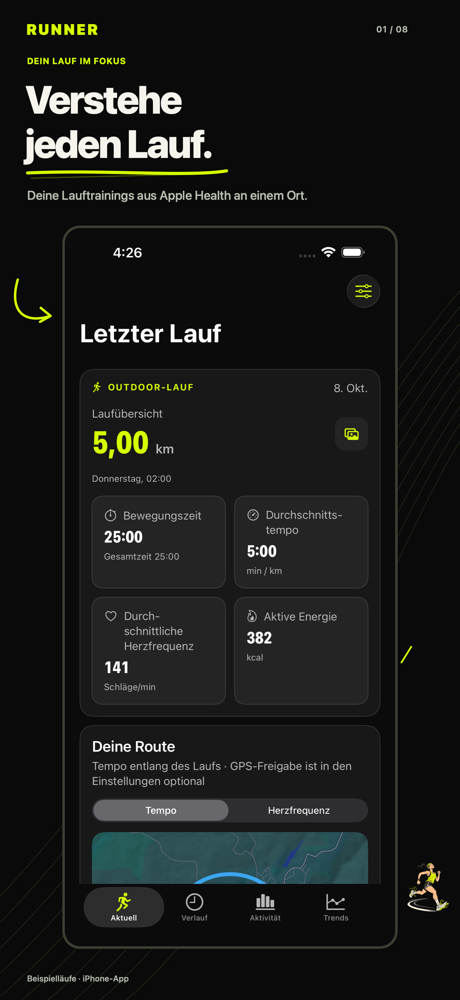
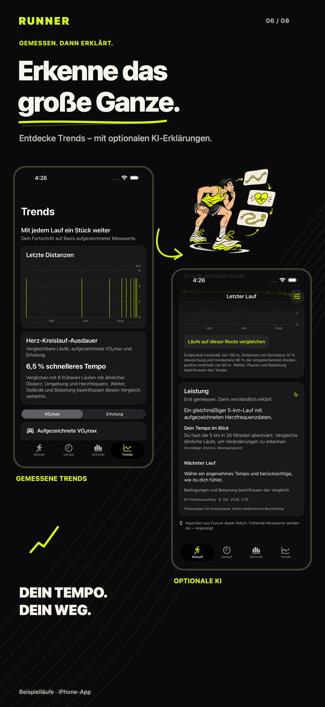
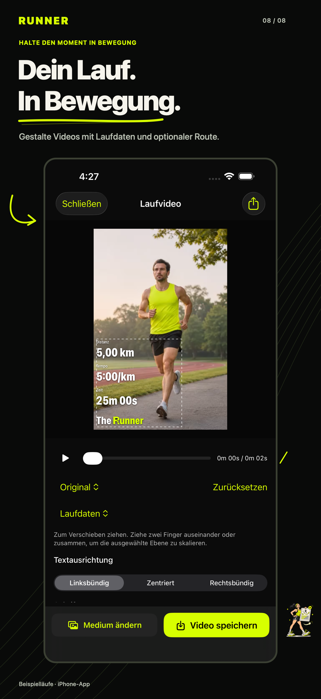

Jeder Lauf erzählt etwas. Verstehe deinen.
Entdecke deine Läufe aus Apple Health neu. Verstehe deine Werte, erkenne Fortschritte und mache aus deinem Zieleinlauf einen Moment zum Teilen.
Im App Store ansehen ↗Version 1.0 wird für die Veröffentlichung vorbereitet. Kostenlos für iPhone.

Der Lauf endet. Der Einblick beginnt.
Tempo, Herzfrequenz, Zwischenzeiten und Routen gehören zusammen. Runner hilft dir, sie zu erkunden – und macht aus fehlenden Messwerten keine erfundenen Zahlen.
- Importiere Apple-Watch- und andere Lauftrainings aus Apple Health.
- Erkunde Messwerte und vergleiche ähnliche Routen.
- Nutze gemessene Statistiken ohne Konto.


Eine Routine, die sichtbar wird.
Ein Lauf ist ein Moment. Dein Verlauf zeigt ein Muster. Bringe Wochen, Ziele und gemessene Trends in eine Ansicht.
- Verfolge Aktivitätssummen, Trainingskalender und wiederkehrende Ziele.
- Erkunde vergleichbare Läufe, aufgezeichnete VO₂max und Erholungswerte.
- Wähle optionale KI-Erklärungen nach Anmeldung und separater Einwilligung.
Dein Zieleinlauf. Dein Stil.
Setze Distanz, Tempo, Zeit und auf Wunsch deine Route auf ein Foto oder Video vom iPhone. Gestalte es, exportiere es und entscheide, wohin es geht.
- Erstelle Hochformat-, Quadrat-, Story- oder Original-Kompositionen.
- Gestalte und positioniere Laufdaten, Route und App-Symbol.
- Bearbeite auf deinem Gerät; Runner lädt deine Medien nicht zu seinen Diensten hoch.

Ein genauerer Blick



Screenshots verwenden synthetische Beispielläufe und generierte Medien. Ergebnisse und verfügbare Messwerte hängen von deinen Aufzeichnungen ab.
DU ENTSCHEIDEST
Deine Daten. Deine Entscheidungen.
Du entscheidest über den Health-Zugriff. KI-Analyse, Cloud-Verlauf und genaue GPS-Synchronisierung haben jeweils eigene Schalter. Deine gemessenen Laufdaten kannst du auf deinem iPhone behalten.
Datenschutzerklärung ↗
Erfordert iOS 26 oder neuer und Lauftrainings in Apple Health. GPS-Routen und einzelne Messwerte hängen von der Aufzeichnung ab. KI ist optional, für Erwachsene ab 18 Jahren, abhängig von Verfügbarkeit und Tageslimits. Sie bietet Fitnesscoaching, keine medizinische Beratung.